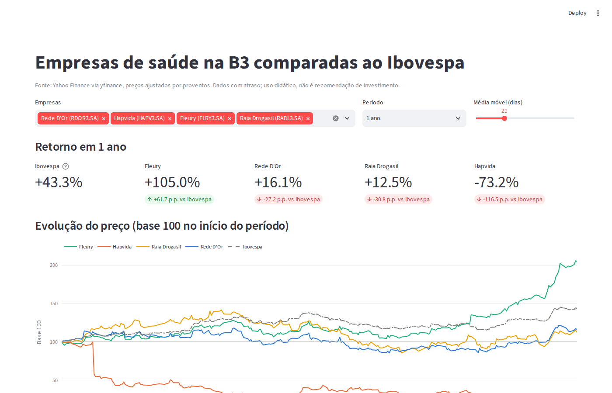

O comitê financeiro de um grupo hospitalar acompanha todo mês as empresas de saúde listadas na B3, porque elas concorrem com o grupo, compram serviços dele e servem de referência de valor para o setor. Hoje o acompanhamento depende de cotações copiadas à mão para uma planilha. Neste laboratório, a cópia manual é substituída por uma consulta à API do Yahoo Finance, e a planilha, por um painel interativo em Streamlit que roda no Codespace.
1. Objetivos de aprendizagem
- Consultar cotações históricas por API com a biblioteca
yfinance. - Comparar ativos de preços diferentes em base 100, em um único eixo.
- Calcular retorno, volatilidade anualizada e queda máxima de cada ativo.
- Construir um dashboard interativo em Streamlit e abri-lo pela aba PORTS do Codespace.
- Redigir uma leitura para o comitê financeiro sustentada pelos números do painel.
2. As perguntas do comitê
O painel existe para responder a três perguntas, e cada gráfico deve servir a pelo menos uma delas.
| Pergunta | Indicador | Elemento do painel |
|---|---|---|
| Quais empresas do setor superaram o Ibovespa no período? | Retorno no período e diferença em pontos percentuais | Cartões e linhas em base 100 |
| Quais oscilaram mais e quanto chegaram a cair a partir de um pico? | Volatilidade anualizada e queda máxima | Dispersão risco versus retorno e tabela |
| As ações do setor sobem e caem juntas? | Correlação dos retornos diários | Mapa de calor |
3. API, Yahoo Finance e yfinance
Uma API é um endereço que devolve dados estruturados quando recebe um pedido em formato combinado. No caso desta aula, o pedido informa o ativo, o período e o intervalo das cotações, e a resposta traz os preços de cada pregão. Como a consulta pode ser refeita a qualquer momento, o painel deixa de depender de quem copiava os números e passa a mostrar sempre a cotação mais recente disponível.
A biblioteca yfinance monta esses pedidos ao Yahoo Finance e entrega o resultado como DataFrame do Pandas. Ela é mantida pela comunidade e não é um produto oficial do Yahoo, o que tem três consequências práticas: a interface pode mudar sem aviso, pedidos em excesso podem ser bloqueados por alguns minutos e as cotações chegam com atraso. O uso é adequado para estudo e acompanhamento, não para operar na bolsa.
O Yahoo identifica cada ativo por um código. Ações da B3 levam o sufixo .SA, índices começam com acento circunflexo e câmbio termina em =X.
| Código | Ativo | Código | Ativo |
|---|---|---|---|
RDOR3.SA | Rede D'Or | ODPV3.SA | Odontoprev |
HAPV3.SA | Hapvida | HYPE3.SA | Hypera |
FLRY3.SA | Fleury | QUAL3.SA | Qualicorp |
RADL3.SA | Raia Drogasil | MATD3.SA | Mater Dei |
^BVSP | Ibovespa | USDBRL=X | Dólar comercial |
4. Três indicadores de desempenho e risco
O retorno no período é a variação entre o primeiro e o último fechamento. Ele responde à primeira pergunta, mas depende da janela: uma empresa pode liderar em 6 meses e ficar atrás em 2 anos. Por isso o painel permite trocar o período, e a leitura para o comitê sempre informa qual janela foi usada.
A volatilidade anualizada é o desvio padrão dos retornos diários multiplicado por √252, o número aproximado de pregões em um ano. Ela mede quanto o preço oscila em torno da própria tendência. Duas empresas com o mesmo retorno podem ter volatilidades muito diferentes, e a de maior volatilidade expõe o investidor a perdas maiores no caminho.
A queda máxima é a maior perda medida a partir do pico anterior. Ela descreve o pior momento de quem comprou no topo e é mais fácil de explicar a um comitê do que o desvio padrão, porque se lê diretamente em reais ou em porcentagem do patrimônio.
Os três indicadores pressupõem preços ajustados. Com auto_adjust=True, o yfinance desconta dividendos, desdobramentos e grupamentos da série histórica. Sem esse ajuste, um desdobramento de 1 para 2 apareceria como queda de 50% em um único dia.
5. Por que base 100 e um único eixo
O Ibovespa está na casa de 200 mil pontos, a Rede D'Or perto de R$ 44 e a Hapvida abaixo de R$ 10. No mesmo gráfico em escala de preço, as ações viram linhas achatadas no rodapé. A saída comum, um segundo eixo vertical, induz o leitor a comparar inclinações que dependem da escala escolhida para cada eixo. A base 100 resolve o problema dividindo cada série pelo seu primeiro valor e multiplicando por 100: todas partem do mesmo ponto, e uma linha em 150 significa alta de 50% desde o início do período, qualquer que seja o ativo.
Uso responsável dos dados
O painel descreve o comportamento passado das cotações e não constitui recomendação de investimento. Registre a data e a hora de cada consulta, porque os números mudam a cada pregão. Uma queda brusca pode resultar de um evento da empresa ou de um erro na fonte; antes de atribuir causa, confira a data na página de relações com investidores ou em comunicados oficiais.
6. Preparação do Codespace
A aula usa três bibliotecas que o Codespace criado no início do semestre ainda não tem: yfinance para a consulta, streamlit para o painel e plotly para os gráficos interativos. No terminal, instale-as uma vez e crie a pasta da entrega.
Dentro de aula-10-seunome, crie o notebook Aula_10_SeuNome.ipynb. A exploração começa no Jupyter porque ali cada resultado intermediário fica visível, e só depois o código segue para o painel.
7. Exploração no Jupyter
A primeira consulta traz o histórico de uma única empresa. O objeto Ticker representa o ativo, e o método history devolve um DataFrame indexado por data.
Cada linha é um pregão, com as colunas Open, High, Low, Close, Volume, Dividends e Stock Splits. Os períodos aceitos incluem 1mo, 3mo, 6mo, 1y, 2y e 5y.
Para comparar empresas, a função download busca vários ativos em um único pedido. O resultado tem colunas em dois níveis, o primeiro com o tipo de preço e o segundo com o código do ativo, de modo que dados["Close"] devolve uma tabela com um fechamento por coluna.
O dropna() descarta dias em que algum ativo não teve cotação, o que garante que todas as séries comecem no mesmo pregão. Em seguida, os três indicadores da seção 4 são calculados para todos os ativos de uma vez.
A consulta feita em 21/10/2026, com período de 1 ano, produziu a tabela abaixo. Os valores da sua consulta serão diferentes conforme a data, e a comparação serve para verificar se o cálculo está correto, não para fixar números.
| Ativo | Retorno (%) | Volatilidade (%) | Queda máxima (%) |
|---|---|---|---|
| Fleury | 105,0 | 29,5 | −18,6 |
| Ibovespa | 43,3 | 19,4 | −16,3 |
| Rede D'Or | 16,1 | 34,2 | −27,6 |
| Raia Drogasil | 12,5 | 37,0 | −39,6 |
| Hapvida | −73,2 | 82,7 | −81,4 |
A Hapvida combina o pior retorno com a maior volatilidade. Para saber se essa volatilidade vem de oscilações frequentes ou de poucos dias extremos, liste os piores pregões e a correlação entre os ativos.
Na consulta de referência, os dois piores dias foram 13/11/2025 (−42,2%) e 13/08/2026 (−33,1%). Duas quedas concentradas explicam boa parte da volatilidade anual, e a pergunta seguinte, que o painel sozinho não responde, é o que aconteceu nessas datas.
8. Do notebook ao painel
O notebook responde às perguntas de quem o escreveu. O painel permite que o comitê escolha empresas e período sem ler código. O Streamlit transforma um arquivo Python em página web e segue uma regra simples: a cada interação com um filtro, o arquivo inteiro é executado de novo, de cima a baixo, com os novos valores.
Essa regra tem uma consequência importante. Sem cuidado, cada clique dispararia um novo pedido ao Yahoo, o que deixa o painel lento e aumenta o risco de bloqueio. O decorador @st.cache_data(ttl=900) guarda o resultado da função por 15 minutos para cada combinação de argumentos, e os cliques seguintes reaproveitam a resposta.
Crie aula-10-seunome/app.py com a primeira versão do painel:
A lista de empresas é convertida em tupla antes de chegar à função porque o cache identifica cada chamada pelos argumentos, e tuplas, ao contrário de listas, não mudam depois de criadas. O st.stop() interrompe a execução quando nenhuma empresa está selecionada, evitando um pedido vazio à API.
9. Rodar o painel no Codespace
- O terminal informa que o app está disponível na porta 8501.
- Abra a aba PORTS do Codespace, localize a porta 8501 e clique no ícone de globo. O painel abre em uma nova aba do navegador.
- O endereço
localhost:8501não funciona no seu navegador, porque o Streamlit roda na máquina do Codespace, e não no seu computador. - Ao salvar o
app.py, o Streamlit oferece a opção Rerun no canto da página. Para encerrar o servidor, useCtrl+Cno terminal.
10. Evolução do painel com o Copilot
Com a primeira versão funcionando, peça ao Copilot, em modo agente, a versão completa. O prompt fixa as bibliotecas, preserva o cache e exige um plano antes da edição, para que você revise a proposta antes de aceitá-la.
Depois da edição, confira três pontos. Os cartões devem bater com a tabela resumo do notebook para o mesmo período. A cor de cada empresa deve continuar a mesma quando outra empresa é retirada do filtro. O preço aparece em escala de reais apenas no gráfico de candles, que mostra uma empresa por vez, e o volume fica em gráfico próprio, sem segundo eixo.
11. Painel de referência
O painel completo está em dashboard-financeiro/app.py. Ele organiza os dados em formato longo (uma linha por data e ativo), calcula os indicadores em uma função separada e segue a mesma ordem das perguntas do comitê: cartões de retorno, evolução em base 100, detalhe de uma empresa, risco versus retorno, correlação e tabela com download. Para executá-lo a partir do repositório da disciplina:
A imagem abaixo mostra o topo do painel na consulta de 21/10/2026, com período de 1 ano.

12. Desafio e entrega
Na pasta aula-10-seunome, entregue o app.py funcionando, o notebook Aula_10_SeuNome.ipynb executado do início ao fim e um README.md com a leitura para o comitê, contendo:
- a data e a hora da consulta, as empresas e o período escolhidos;
- a resposta a cada uma das três perguntas do comitê, com o número que a sustenta;
- a data da maior queda diária encontrada, o evento que a explica e o link da fonte consultada;
- uma limitação do painel que o comitê deve conhecer antes de usá-lo.
Critério de aceite: o painel abre pela aba PORTS sem erro, os números do README coincidem com os do painel para o período declarado e a explicação da queda cita uma fonte verificável.
13. Checklist de qualidade
- Preços ajustados com
auto_adjust=Trueem todas as consultas. - Consulta à API dentro de uma função com
@st.cache_data. - Um único eixo vertical por gráfico; ativos de escalas diferentes comparados em base 100.
- Cor fixa por empresa, independente da seleção no filtro.
- Mensagem de erro quando a API não devolve dados, sem valores inventados.
- Fonte, data da consulta e aviso de que não há recomendação de investimento visíveis no painel.
- Afirmações do README acompanhadas de número, período e data.
14. Síntese
A API substituiu a cópia manual de cotações e tornou a consulta reproduzível. A base 100 permitiu comparar ativos de escalas diferentes em um único eixo, e retorno, volatilidade e queda máxima descreveram desempenho e risco do mesmo período. O Streamlit transformou o notebook em painel ao reexecutar o script a cada filtro, com o cache evitando pedidos repetidos ao Yahoo. A leitura para o comitê completa o ciclo: cada afirmação cita o número, o período e a data da consulta, e a explicação de uma queda depende de uma fonte externa ao painel.
15. Referências e continuidade
No laboratório 11, em 28/10, o case Olist volta ao centro: o dashboard das dez perguntas do Chief de Vendas será publicado no GitHub Pages, lendo as views do Supabase. Os princípios desta aula continuam valendo, com um eixo por gráfico, cores fixas por entidade e números conferíveis em tabela.
- yfinance · Documentação: funções
Ticker,historyedownload. - Streamlit · Main concepts: modelo de execução e widgets.
- Streamlit · Caching:
st.cache_datae o parâmetrottl. - Plotly Express e gráficos de candles.
- GitHub Codespaces · Encaminhamento de portas.